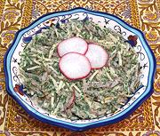

|
Tashkent Salad with MeatUzbekistan - Tashkent Salat | ||||
| Makes: Effort: Sched: DoAhead: |
1-1/3 # ** 1-1/2 hrs Yes |
This simple salad includes a lot of herbs and radishes, along with strips of Beef or Lamb. It is typical of Tashkent, capitol of Uzbekistan. The locals learned mayonnaise dressing from the Russians. | |||
|
|
6 6 1-1/2 5 4 2/3 1/3 3 3 3 ------ 6 1 ------ 1 |
oz oz T oz oz t t T T T --- T T --- |
Beef/Lamb, boiled Onion Butter Daikon Radish Radishes, red Salt Pepper Dill, fresh Parsley, flat Cilantro -- Dressing Mayonnaise (1) Lemon Juice (2) -- Garnish Egg, hard boiled |
One and a third pound will make 5 salad size servings. Make - (1-1/2 hrs - 25 min work)
|